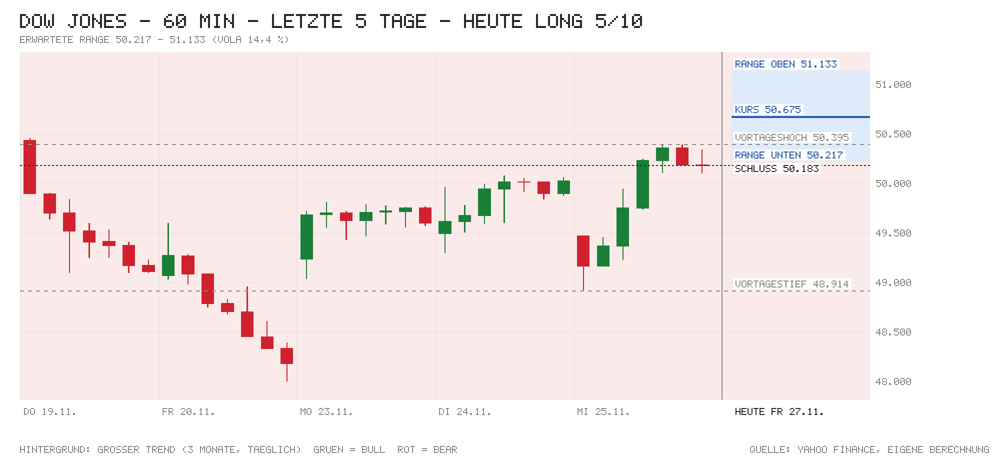

Tagesentscheidung ab 15:33 bis 19:00 Uhr
Der Dow startet nach Thanksgiving mit +0,55 % und legt seit der Eröffnung um weitere 0,43 % zu. Die Erholung ist breit: 25 der 30 Werte steigen, zusammen sind es +463 Punkte, angeführt von Caterpillar, Goldman Sachs und Microsoft. Dazu kommen kräftige Vorgaben aus Asien (Shanghai +3,7 %, Nikkei +2,1 %), Europa im Plus und ein fallendes Brent. Das wichtigste Gegenargument ist das Zinsbild: Für den 9.12. ist eine Fed-Erhöhung zu 99 % eingepreist, die 10J-Rendite steigt auf 4,89 %, und der große Trend steht weiter auf Bear. Heute wird nur bis 13:00 Uhr New York (19:00 Uhr deutscher Zeit) gehandelt, bei dünnen Umsätzen.
- Kurs um 15:33
- 50.675
- Erwartete Range
- 50.217 – 51.133
- Eingepreist (Tagesoption)
- ±0,91 %
Einschätzung vom Kurs um 15:33 bis zum US-Schluss (heute verkürzt, 19:00 Uhr). Range = ±1 σ für die restliche Handelszeit aus der S&P-500-Tagesoption, auf den Dow umgerechnet (ca. 68 %). Die Option verfällt heute zum verkürzten Schluss. Keine Anlageberatung.
Chart

Signale
| Signal | Wirkung | Stand und Einordnung |
|---|---|---|
| Eröffnung & erste Minuten | Rückenwind | Eröffnung 50.459 (Lücke +0,55 % zum Schluss vom 25.11.), seitdem +0,43 % auf 50.675. Das Tief ist die Eröffnung, das Hoch liegt bei 50.697. |
| Schwergewichte heute | Rückenwind | Alle 30 Werte zusammen: +463 Pkt. Caterpillar +95, Goldman Sachs +64, Microsoft +52, JPMorgan +35. Kaum Bremser: Coca-Cola −6, McDonald's −4, Procter & Gamble −4. |
| US-Daten heute | Neutral | 14:30 Uhr: Warenhandelsbilanz −149,5 Mrd. USD (Prognose −135,9 Mrd.), Großhandelslager +0,9 % (Prognose +0,5 %). Das sind Nebendaten ohne großen Einfluss. |
| Europa & Asien | Rückenwind | DAX +0,48 %, Euro Stoxx 50 +0,99 %. Asien kräftig: Nikkei +2,11 %, Shanghai +3,73 %, CSI 300 +4,17 %, Hang Seng +2,11 %. |
| Zinserwartung | Gegenwind | Für die Fed-Sitzung am 9.12. sind 99 % für +25 Bp. eingepreist (impl. 4,13 %), für Januar 65 % und für März 62 % für weitere Erhöhungen. |
| Renditen | Gegenwind | US 2J 4,67 %, 10J 4,89 % (live, +4 Bp. zum Vortagesschluss 4,85 %). Vor einer Woche stand die 10J bei 5,07 % (offiziell). |
| Kreditstress | Neutral | FRED liefert keinen Wert. Ersatzweise: HYG +0,15 %, LQD −0,03 % gegenüber dem 25.11. Stress ist nicht zu sehen. |
| Öl & Dollar | Rückenwind | Brent 91,44 USD (−3,35 %), WTI 84,25 USD (+0,68 %), EUR/USD 1,0953 (−0,16 %). Der Ölpreis entlastet, der Dollar ist leicht fester. |
| Trend | Gegenwind | 50.675 liegt unter dem 21-Tage- (51.328) und dem 50-Tage-Schnitt (51.582), aber knapp über dem 200-Tage-Schnitt (50.773 – heute zurückerobert). Der große Trend steht seit 28.10. auf Bear. |
| Positionierung | Neutral | COT 17.11.: Hebel-Fonds sind im S&P-Future netto −234.978 Kontrakte short, aber im Abbau (+68.082). Das stützt Eindeckungen, ist aber kein Extrem. |
| Unternehmensnachrichten | Neutral | Keine Quartalszahlen von Dow-Werten. Zu den Gewinnern fanden sich keine eigenen Meldungen (Websuche ohne Ergebnis für heute). |
| Profi-Sicht | Neutral | ING („FX Daily: Green Friday“): Die Stimmung erholt sich, aber der Markt preist wieder Fed-Erhöhungen ein. Darum bleibt der Dollar trotz Aktienerholung fest. |
| Termine im Fenster | Rückenwind | Verkürzter Handel bis 19:00 Uhr, keine Fed-Reden und keine Auktionen im Kalender. Es gibt kein Ereignisrisiko, nur dünne Umsätze. |
Dow-Werte heute
| Aktie | Heute | Beitrag |
|---|---|---|
| Caterpillar | +2,85 % | +95 Pkt. |
| Goldman Sachs | +1,31 % | +64 Pkt. |
| Microsoft | +1,75 % | +52 Pkt. |
| JPMorgan | +1,82 % | +35 Pkt. |
| American Express | +1,56 % | +30 Pkt. |
| Amazon | +1,96 % | +29 Pkt. |
| UnitedHealth | +1,28 % | +27 Pkt. |
| Chevron | +1,45 % | +19 Pkt. |
| Summe aller 30 Werte | +463 Pkt. |
Beitrag = Kursänderung seit gestern ÷ Dow-Divisor (aus den Kursen berechnet, 0,16375). Die Summe ist größer als das Index-Plus von rund +490 Pkt. seit dem 25.11., weil die Einzelkurse andere Zeitstände haben (Yahoo, bis 15 Min. verzögert). Die Dow-Liste im Skript hat den Stand Nov. 2024.
Großer Trend (3-Monats-Momentum)
- Stand
- Bear
- Seit
- 28.10. (5 Wechsel in 3 Monaten)
- Schluss 25.11.
- −6,32 % vs. Zins +1,00 %
- Heute dreht es bei Schluss über
- 54.097 (jetzt −6,38 %)
Auch mit dem Kurs von jetzt bliebe das Signal klar Bear. Bull = Rendite der letzten 3 Monate über dem Geldmarktzins, Bear = darunter. Regel: Rendite der letzten 63 Handelstage (≈ 3 Monate) gegen die 13-Wochen-T-Bill (^IRX, jetzt 4,16 %), jeden Tag zum Schluss neu entschieden, Zeitrahmen Tageskerzen (nach Antonacci 2014, dort monatlich über 12 Monate; täglich entschieden dreht es öfter falsch). Keine Anlageberatung.
Bilanz der letzten Entscheidung
26.11.: kein Handel (Thanksgiving, NYSE geschlossen), daher keine Bewertung. Seit Start gab es 15 Einschätzungen. Die Richtung stimmte in 53 % der Fälle, in Summe ergeben sich −1.352 Punkte bis Schluss (Schnitt −90). Die Range wurde an 40 % der 15 Tage getroffen (Soll ca. 68 %).
Marktlage
| Markt | Stand | Veränderung |
|---|---|---|
| Dow Jones (Schluss 25.11.) | 50.182,95 | +0,33 % |
| Dow (Eröffnung heute) | 50.458,86 | +0,55 % |
| Dow (jetzt, Kurs zur Notiz) | 50.675 | +0,98 % |
| S&P 500 | 7.261,88 | +1,10 % |
| Nasdaq 100 | 26.432,18 | +1,48 % |
| US-Futures (S&P / Nasdaq) | 7.291,00 / 26.624,75 | +1,32 % / +2,01 % |
| DAX (aktuell) | 25.335,30 | +0,48 % |
| Euro Stoxx 50 (aktuell) | 6.074,24 | +0,99 % |
| EUR/USD | 1,0953 | −0,16 % |
| WTI (USD/Barrel) | 84,25 | +0,68 % |
| Brent (USD/Barrel) | 91,44 | −3,35 % |
| Gold (USD/Unze) | 3.664,80 | +3,65 % |
| VIX | 25,72 | −4,03 % |
| VXD (Schluss 25.11.) | 22,72 | +4,08 % |
Stände von 15:33 Uhr (Yahoo, bis 15 Min. verzögert). US-Veränderungen beziehen sich auf den Schluss vom 25.11. (Donnerstag Thanksgiving, kein Handel). Heute verkürzter Handel bis 19:00 Uhr deutscher Zeit. Steigendes Öl und steigende Volatilität sind rot markiert, fallende grün.
Anleihen & Zinsen
| Kennzahl | Stand | Veränderung |
|---|---|---|
| US-Treasury 2J (live) | 4,67 % | +6 Bp. (vs. offiziell 4,61 % am 25.11.) |
| US-Treasury 10J (live) | 4,89 % | +4 Bp. (vs. 4,85 %) |
| Fed nächste Sitzung (9.12.) | 99 % für +25 Bp. (impl. 4,13 %) | Erhöhung voll eingepreist |
| Fed-Zielband | 3,75–4,00 % (EFFR 3,88 %) | zuletzt +25 Bp. am 17.9. |
| US-Hochzins (HYG, Ersatz) | 76,64 USD | +0,15 % (vs. 25.11.) |
| Investment Grade (LQD, Ersatz) | 104,26 USD | −0,03 % (vs. 25.11.) |
Die Risikoaufschläge von FRED lagen nicht vor. Ersatzweise stehen hier die ETFs HYG und LQD (Veränderung zum letzten Handelstag, Wochenwert n/v).
Termine heute (deutsche Zeit)
- 14:30 USA: Warenhandelsbilanz – Ist −149,5 Mrd. USD vs. Prognose −135,9 Mrd. · zuvor −135,1 Mrd.
- 14:30 USA: Großhandelslager – Ist +0,9 % vs. Prognose +0,5 % · zuvor +0,8 %
- 14:30 USA: Einzelhandelslager ohne Autos – Ist +0,6 % · zuvor +0,7 %
- 15:30 Eröffnung Wall Street (verkürzter Handel)
- 19:00 Verkürzter US-Börsenschluss (13:00 Uhr New York). Keine Fed-Reden, keine Auktionen, keine Quartalszahlen von Dow-Werten im Kalender.
Nachrichten zu Dow-Werten
- Gesamtmarkt: Nach dem Feiertag holt die Wall Street die Erholung aus Europa und Asien nach. Der S&P 500 steht +1,1 %, der Nasdaq 100 +1,5 % über dem Schluss vom Mittwoch. Einschätzung (eigene): Eindeckungen im dünnen Feiertagshandel. Der Black Friday war in den Vorjahren meist ein positiver Handelstag.
- Caterpillar: +2,85 %, größter Indexbeitrag (+95 Pkt.). Eine eigene Meldung fand sich nicht. Einschätzung (ohne Quelle): Rückenwind von der starken China-Sitzung (CSI 300 +4,2 %) für zyklische Industriewerte.
- Goldman Sachs, JPMorgan, American Express: +1,3 bis +1,8 %, zusammen +129 Pkt. Einschätzung: Banken profitieren von steigenden Renditen und der besseren Risikostimmung.
- Microsoft, Amazon: +1,75 % und +1,96 % nach den Verlusten vom Mittwoch. Einschätzung: Gegenbewegung bei Tech, bisher noch keine Trendwende.
Profi-Sicht & Positionierung
- ING THINK: Laut „FX Daily: Green Friday“ erholt sich die Risikostimmung. Gleichzeitig preist der Markt am kurzen Ende wieder Fed-Erhöhungen ein (2J-Swaps +10 Bp. seit Mittwoch), deshalb erwartet ING keine breite Dollar-Schwäche. Der Commodities Feed meldet eine Erholung bei Kupfer und Gold.
- Positionierung (COT, Stand 17.11.): Hebel-Fonds sind im S&P-Future netto −234.978 Kontrakte short (Short-Abbau um 68.082), Vermögensverwalter netto +895.049. In 10J-Treasuries sind Hebel-Fonds netto −2,48 Mio. Kontrakte short.
Quellen
- Marktdaten (Skript
marktdaten.mjs): Yahoo Finance (Kurse, Dow-Werte, VXD, ^IRX), Nasdaq (Kalender, Optionskette SPY), US-Live-Kurve, Bundesbank, U.S. Treasury, Fed-Pfad über Amber Terminal, CFTC, ING THINK - ING THINK: FX Daily – Green Friday
- ING THINK: The Commodities Feed – Copper and gold rebound while oil extends gains
- ING THINK: Rates Spark – Rates resist bearish pressure as France faces rating risk